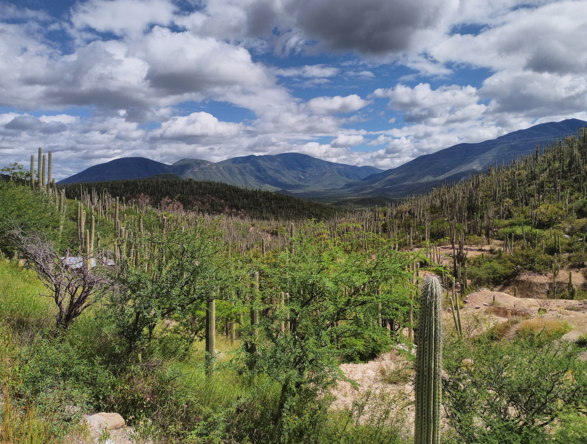
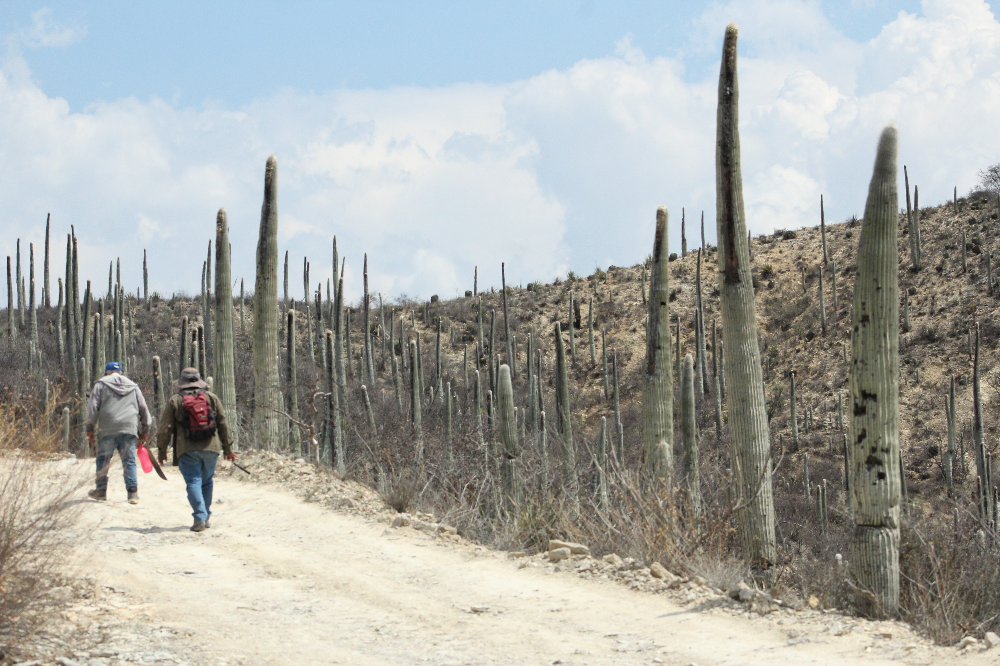
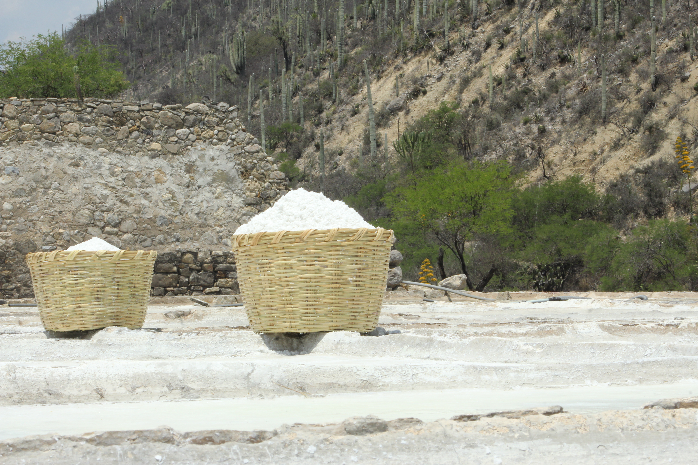

PATRIMONIO BIOCULTURAL
PATRIMONIO BIOCULTURAL
PATRIMONIO BIOCULTURAL
PATRIMONIO BIOCULTURAL

Un modelo de desarrollo de turismo biocultural con enfoque participativo para la conservación y el desarrollo local.
El Valle de Tehuacán constituye uno de los centros de evolución y endemismo de cactáceas columnares más importantes de todo el continente. Este territorio resguarda un vasto patrimonio biocultural en sus comunidades campesinas y rurales, representando una opción sostenible y urgente para la gestión de recursos comunes.
A través de la investigación acción participativa que involucra de manera directa a los actores locales, diseñamos una propuesta de turismo que integra planes de manejo, protege la biodiversidad y fortalece las actividades tradicionales, mitigando la migración y dinamizando la economía local.

Diseñar un modelo de desarrollo de turismo del patrimonio biocultural en comunidades rurales con un enfoque participativo para el desarrollo local: Casos de estudio en la Mixteca Poblana y el Valle de Tehuacán.

